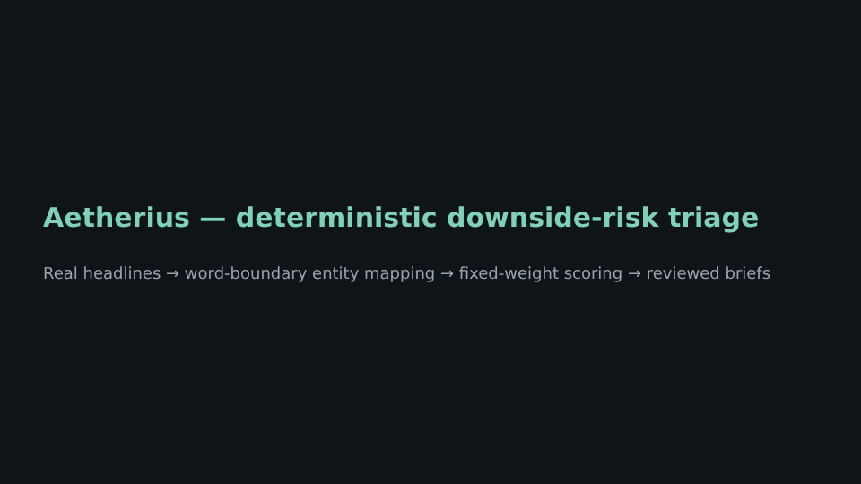

A deterministic, auditable downside-risk screen over SEC EDGAR filings and GDELT financial news, with a reproducible crisis backtest, an honest market-timing analysis, and a pre-registered live forward test.

Replayed on 161 real archived headlines from three crises, the screen flagged every affected company before its formal failure date and never flagged the unrelated control companies. But it never flagged a company before the press reported its stock already falling.
So the system is fast, auditable triage of a market reaction already underway, not a predictor. The working paper (Section 4.5) shows the check and the tests that pin it.
| Event | Mechanism | Flagged before resolution | Median lead to resolution | Controls flagged | Before market reaction |
|---|---|---|---|---|---|
| SVB 2023 | Regional-bank contagion | 5 / 5 | 2.34 days | 0 / 1 | 0 / 5 |
| Wirecard 2020 | Accounting fraud | 1 / 1 | 6.60 days | 0 / 1 | 0 / 1 |
| FTX 2022 | Crypto counterparty contagion | 3 / 3 | 7.12 days | 0 / 1 | 0 / 3 |
On 2026-10-16, before collecting any data, I committed a fixed list of 20 large US companies. Every day a GitHub Action scores live news and filings with the frozen model and commits the results. Because the record is append-only and timestamped by git, it can't be quietly edited afterwards. It will show how often the screen raises false alarms when nothing is happening, which the backtest cannot.
git clone https://github.com/zariffromlatif/Aetherius-Risk-Intelligence.git
cd Aetherius-Risk-Intelligence
pip install -r requirements.txt
pytest aetherius/tests -q
python simulations/backtest/run_backtest.py --event svb-2023Built by Zarif Latif as a study in building auditable data systems and evaluating them honestly. Python, FastAPI, PostgreSQL, Celery and GitHub Actions. Feedback, especially critical feedback, is welcome: zarif@aetheriusresearch.tech.